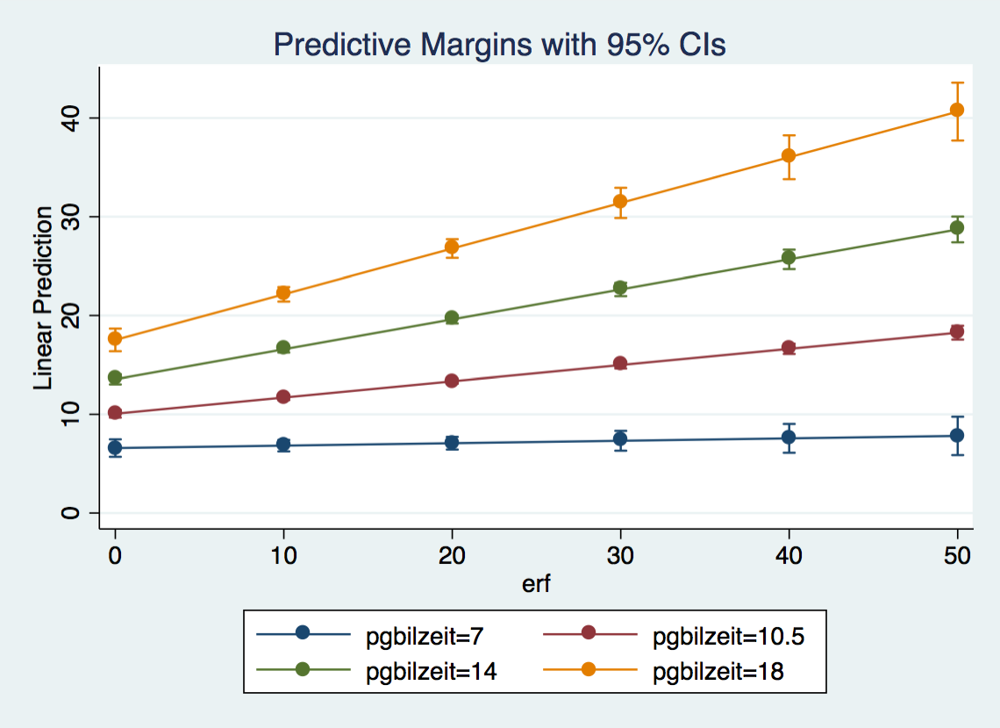
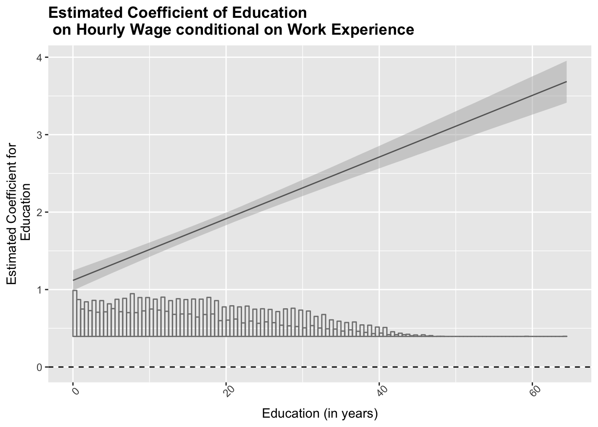
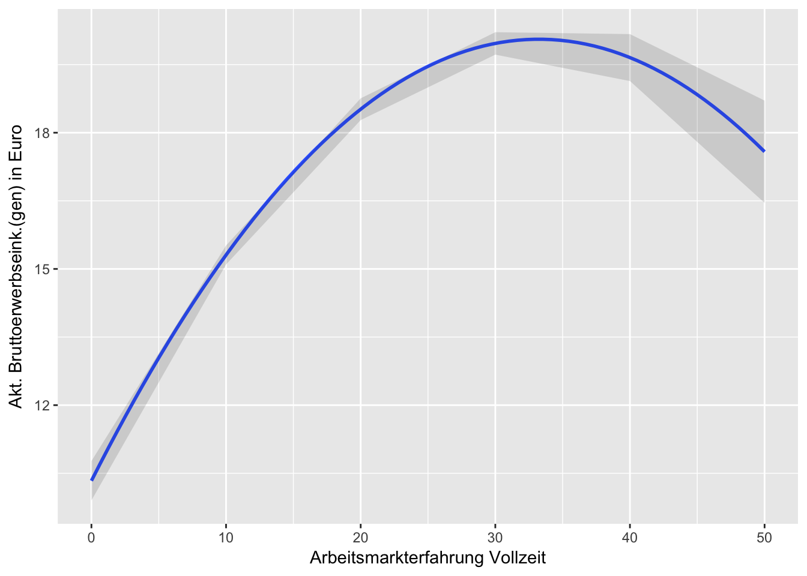
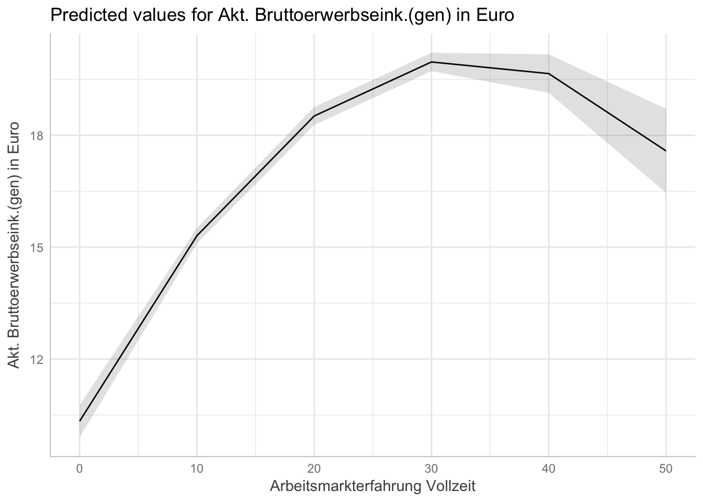
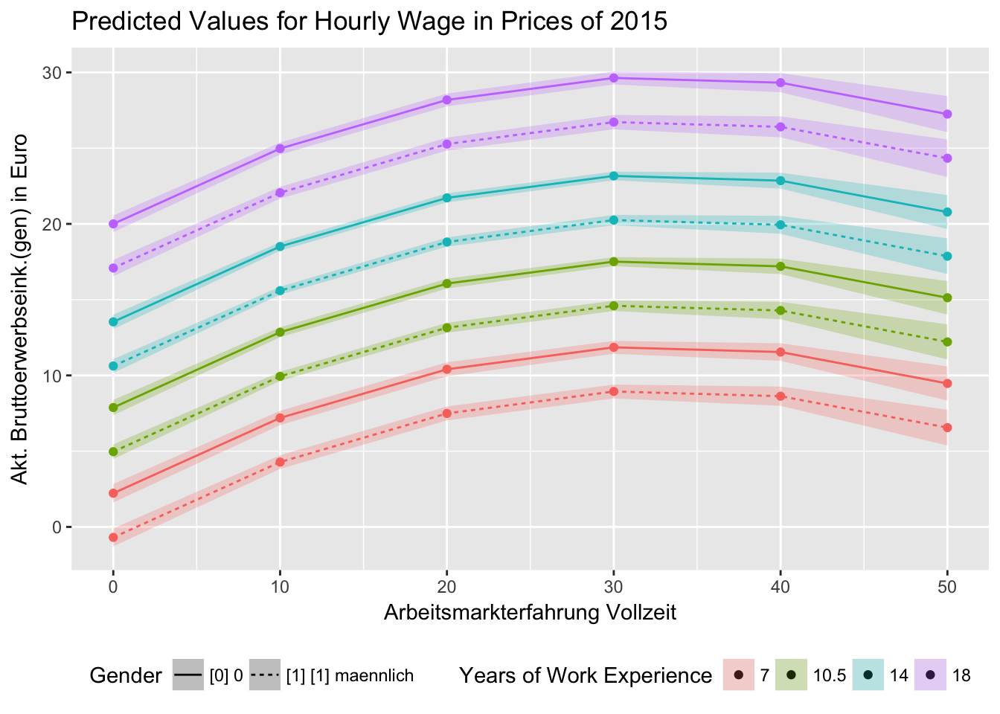

Exercise 3
Questions
3.1 You should start with an income equation with hourly gross wages (do not use the log-transfromation for now). Predictor variables are years of education, labor force experience, sex and region.
3.2 Specify an interaction effect for sex and years of education. Interpret the results.
3.3 Present your results grafically using a marginal effects plot
3.4 Specify another interaction effect between years of education and labor force experience. Interpret the results. Use a marginal effects plot to do that.
3.5 Include a nominal (e. g. company size: pgallbet) variable with more than two categories as predictors using a dummy set.
3.6 Drop the interactions and the dummy set. Include duration of unemployment as additional predictor. What has the largest effect, years of education, labor force experience or duration of unemployment?
3.7 Specify a quadratic effect for labor force participation. Interpret the result using a marginal effects plot.
3.8 Now, use log-transformed income as dependent variable. Interpret the effect of years of education on income. Present your result in a table using estout or esttab.
Data Prep
Stata
set more off
capt clear
version 14
use "_data/ex_mydf.dta", clear
. set more off
. capt clear
. version 14
.
. use "_data/ex_mydf.dta", clear
(PGEN: Feb 12, 2017 13:00:53-1 DBV32L)R
Load Data
#### load dataset ####
ex_mydf <- readRDS(file = "_data/ex_mydf.rds")
asample <- ex_mydf %>%
filter(pgtatzeit > 5,
alter %>% dplyr::between(18, 65),
pgemplst %in% c(1,2,4),
pop<3
)
## Sample For Analysis for 2015
asample15 <- asample %>% filter(syear == 2015)Answers
3.1 Basic Model
You should start with an income equation with hourly gross wages hwageb (do not use the log-transfromation for now). Predictor variables are years of education pgbilzeit, labor force experience erf, sex frau and region ost.
Stata
use "_data/ex_mydf.dta", clear
reg hwageb pgbilzeit erf frau ost if asample==1 & syear==2015 [pw=phrf]
* reg hwageb pgbilzeit c.erf##c.erf frau ost if asample==1 & syear==2015 [pw=phrf]
. use "_data/ex_mydf.dta", clear
(PGEN: Feb 12, 2017 13:00:53-1 DBV32L)
.
. reg hwageb pgbilzeit erf frau ost if asample==1 & syear==2015 [pw=phrf]
(sum of wgt is 3.3886e+07)
Linear regression Number of obs = 14,218
F(4, 14213) = 259.84
Prob > F = 0.0000
R-squared = 0.2253
Root MSE = 10.072
------------------------------------------------------------------------------
| Robust
hwageb | Coef. Std. Err. t P>|t| [95% Conf. Interval]
-------------+----------------------------------------------------------------
pgbilzeit | 1.638184 .0619018 26.46 0.000 1.516848 1.75952
erf | .2431915 .0109426 22.22 0.000 .2217425 .2646405
frau | -2.754198 .2425546 -11.35 0.000 -3.229636 -2.278759
ost | -4.278906 .2718054 -15.74 0.000 -4.81168 -3.746132
_cons | -6.573576 .7699179 -8.54 0.000 -8.082716 -5.064436
------------------------------------------------------------------------------
. * reg hwageb pgbilzeit c.erf##c.erf frau ost if asample==1 & syear==2015 [pw=
> phrf]
. R
version 1
Overview of model with summary()
fit3.1 <- asample15 %>%
lm(hwageb~ pgbilzeit + erf + ost + frau, data=., weights=phrf)
summary(fit3.1)##
## Call:
## lm(formula = hwageb ~ pgbilzeit + erf + ost + frau, data = .,
## weights = phrf)
##
## Weighted Residuals:
## Min 1Q Median 3Q Max
## -2648 -150 -15 118 19905
##
## Coefficients:
## Estimate Std. Error t value Pr(>|t|)
## (Intercept) -6.57538 0.46397 -14.2 <2e-16 ***
## pgbilzeit 1.63828 0.03102 52.8 <2e-16 ***
## erf 0.24324 0.00762 31.9 <2e-16 ***
## ost -4.28070 0.22214 -19.3 <2e-16 ***
## frau -2.75467 0.17368 -15.9 <2e-16 ***
## ---
## Signif. codes: 0 '***' 0.001 '**' 0.01 '*' 0.05 '.' 0.1 ' ' 1
##
## Residual standard error: 492 on 14216 degrees of freedom
## (549 observations deleted due to missingness)
## Multiple R-squared: 0.226, Adjusted R-squared: 0.225
## F-statistic: 1.04e+03 on 4 and 14216 DF, p-value: <2e-16version 2
Overview of model with broom package
# overall model
glance(fit3.1)# model coefficients
tidy(fit3.1, conf.int = T)3.2 Interaction
Specify an interaction effect for sex and years of education. Interpret the results.
In the prior model, with only main effects, we could interpret the gender variable frau as the difference between females (1) and males (0). Now that we added the interaction term, we allow the slopes for years of education to differ between females and males. The presence of the interaction implies that the effect of education depends on the gender of a person. The term frau:pgbilzeit indicates the extend to which the difference between females and males changes for every year of education. The coefficient for years of education pgbilzeit indicates the effect of education on hourly wages for males (reference category: frau == 0). The model predicts that for every increase of education by one unit (year), hourly wage increases by 1.84 € for males and by 1.84 € - 0.46 € = 1.38 € for females (all other factors held constant).
This is visualized in the following plots of exercise 3.3.
Stata
use "_data/ex_mydf.dta", clear
reg hwageb i.frau##c.pgbilzeit erf ost if asample==1 & syear==2015 [pw=phrf]
. use "_data/ex_mydf.dta", clear
(PGEN: Feb 12, 2017 13:00:53-1 DBV32L)
.
. reg hwageb i.frau##c.pgbilzeit erf ost if asample==1 & syear==2015 [pw=phrf]
(sum of wgt is 3.3886e+07)
Linear regression Number of obs = 14,218
F(5, 14212) = 266.80
Prob > F = 0.0000
R-squared = 0.2284
Root MSE = 10.053
------------------------------------------------------------------------------
| Robust
hwageb | Coef. Std. Err. t P>|t| [95% Conf. Interval]
-------------+----------------------------------------------------------------
frau |
weiblich | 3.14171 1.351724 2.32 0.020 .4921544 5.791265
pgbilzeit | 1.84609 .0991546 18.62 0.000 1.651734 2.040446
|
frau#|
c.pgbilzeit |
weiblich | -.4573853 .1146227 -3.99 0.000 -.6820608 -.2327097
|
erf | .2446797 .010997 22.25 0.000 .223124 .2662353
ost | -4.236248 .269402 -15.72 0.000 -4.764311 -3.708184
_cons | -9.272963 1.208191 -7.68 0.000 -11.64117 -6.904751
------------------------------------------------------------------------------R
fit3.2 <- asample15 %>%
select(hwageb, pgbilzeit, frau, erf, ost, phrf) %>%
drop_na %>%
lm(hwageb ~ frau*pgbilzeit + erf + ost, data= ., weights = phrf)
# overall model
glance(fit3.2)# model coefficients
tidy(fit3.2, conf.int = T)3.3 Marginal Effects
Present your results grafically using a marginal effects plot.
Stata
knitr::include_graphics("out/margins_3_3.png")
use "_data/ex_mydf.dta", clear
reg hwageb i.frau##c.pgbilzeit erf ost if asample==1 & syear==2015 [pw=phrf]
qui: margins, at(pgbilzeit=(7 (1) 18) frau=(1 0))
marginsplot, name(margins_3_3, replace)
graph use margins_3_3
graph export "out/margins_3_3_text.png", replaceR
Plots
Marginsplot
# Marginsplot for Years of Education and Gender
dat <- ggpredict(fit3.2, terms = c("pgbilzeit", "frau"))
# fancy plot
ggplot(dat, aes(x, predicted, color = group, fill = group)) +
geom_line()+
geom_point()+
geom_ribbon(ggplot2::aes_string(ymin = "conf.low",
ymax = "conf.high", color = NULL), alpha = 0.25) +
labs(x = get_x_title(dat), y = get_y_title(dat))+
ggtitle("Predicted Values for Hourly Wages in Prices of 2015")+
guides(fill = guide_legend(title="Gender"),color = F)+
theme(legend.position="bottom")
# quick alternative
plot(dat)
Coeff-Plots
# m = the object of a regression result
# var1 = var whose coefficient is to be plotted
# var2 = var on which the coefficient is conditional (var2)
# if we intend to know how the year of education can affect the coefficient for gender on the hourly wage, var1 is gender, and var2 is years of education.
# parameters: point = wether a line or points are shown
# hist = it can be helpful to the evaluation of the substantive significance of the conditional effect to know the distribution of the conditioning variable (years of education)
interplot(m = fit3.2 , var1 = "frau", var2= "pgbilzeit", point = F, hist = T) +
theme(axis.text.x = element_text(angle=45)) +
xlab("Education (in years)") +
ylab("Estimated Coefficient for\nGender") +
ggtitle("Effects of Education on Estimated Gender Coefficient") +
theme(plot.title = element_text(face="bold")) +
# Add a horizontal line at y = 0
geom_hline(yintercept = 0, linetype = "dashed")
# -> negative slope, shows that with increasing years of education(along the x axis), the magnitude of the coefficient of gender on the Hourly Wage increases (in the negative direction) (along the y axis).
# Similarly, to show how the gender affects the coefficient of years of education on hourly wage, one only needs to switch var1 and var2:
interplot(m = fit3.2 ,var1 = "pgbilzeit" , var2="frau")+
ggtitle("Effects of Gender on Estimated Coefficient of Education")
# margins paket, passt margins von Stata an3.4 Interaction II
Specify another interaction effect between years of education and labor force experience. Interpret the results. Use a marginal effects plot to do that.
Stata
Model
use "_data/ex_mydf.dta", clear
reg hwageb i.frau##c.pgbilzeit c.pgbilzeit##c.erf ost ///
if asample==1 & syear==2015 [pw=phrf]
qui: margins, at(erf=(0(10)50) pgbilzeit=(7, 10.5, 14, 18) frau=(1 0))
marginsplot, name(margins_3_4, replace)
graph use margins_3_4
graph export "out/margins_3_4.png"
. use "_data/ex_mydf.dta", clear
(PGEN: Feb 12, 2017 13:00:53-1 DBV32L)
.
. reg hwageb i.frau##c.pgbilzeit c.pgbilzeit##c.erf ost ///
> if asample==1 & syear==2015 [pw=phrf]
(sum of wgt is 3.3886e+07)
note: pgbilzeit omitted because of collinearity
Linear regression Number of obs = 14,218
F(6, 14211) = 247.98
Prob > F = 0.0000
R-squared = 0.2391
Root MSE = 9.9834
------------------------------------------------------------------------------
| Robust
hwageb | Coef. Std. Err. t P>|t| [95% Conf. Interval]
-------------+----------------------------------------------------------------
frau |
weiblich | .6040457 1.3138 0.46 0.646 -1.971175 3.179267
pgbilzeit | 1.117752 .1180213 9.47 0.000 .8864144 1.349089
|
frau#|
c.pgbilzeit |
weiblich | -.2616283 .1115297 -2.35 0.019 -.4802412 -.0430155
|
pgbilzeit | 0 (omitted)
erf | -.2539583 .0644679 -3.94 0.000 -.3803239 -.1275927
|
c.pgbilzeit#|
c.erf | .0398017 .0056076 7.10 0.000 .0288101 .0507932
|
ost | -4.415959 .2691979 -16.40 0.000 -4.943622 -3.888296
_cons | .1061027 1.392269 0.08 0.939 -2.622927 2.835132
------------------------------------------------------------------------------
.
. qui: margins, at(erf=(0(10)50) pgbilzeit=(7, 10.5, 14, 18) frau=(1 0))
. marginsplot, name(margins_3_4, replace)
Variables that uniquely identify margins: erf pgbilzeit frau
.
. graph use margins_3_4
file margins_3_4.gph not found
r(601);
end of do-file
r(601);Plot
knitr::include_graphics("out/margins_3_4.png")
R
Model
Fit 3.4
fit3.4 <- asample15 %>%
lm(hwageb ~ frau*pgbilzeit + pgbilzeit*erf + ost,
data = ., weights = phrf)
tidy(fit3.4)glance(fit3.4)Plots
Marginal Effect Plot
# Marginsplot for Years of Education and Gender
dat <- ggpredict(fit3.4, terms = c("erf [0,10,20,30,40,50]", "pgbilzeit [7,10.5,14,18]", "frau"))
ggplot(dat, aes(x, predicted, color = group, fill = group, linetype = facet)) +
geom_point()+
geom_line()+
geom_ribbon(ggplot2::aes_string(ymin = "conf.low",
ymax = "conf.high", color = NULL), alpha = 0.25)+
labs(x = get_x_title(dat), y = get_y_title(dat))+
ggtitle("Predicted Values for Hourly Wages in Prices of 2015")+
theme(legend.position="bottom")+
guides(fill = guide_legend(title="Years of Education"),
linetype = guide_legend(title = "Gender"),
color = F)
# plot(dat, show.legend = F)+
# ggtitle("Predicted Values for Hourly Wages in Prices of 2015")+
# guides(fill=guide_legend(title="Years of Education"))Coeff Plots
Marginal Effects of Work Experience
# Marginal Effect of Work Experience
interplot(m = fit3.4 ,var1 = "erf", var2 = "pgbilzeit", hist = T) +
xlab("Education (in years)") +
ylab("Estimated Coefficient for\n Work Experience") +
ggtitle("Estimated Coefficient of Work Experience conditional on Education") +
theme(plot.title = element_text(face="bold")) +
geom_hline(yintercept = 0, linetype = "dashed")
Marginal Effects of Education
# Marginal Effects of Education
interplot(m=fit3.4, var1 = "pgbilzeit", var2="erf", point = F, hist = T) +
theme(axis.text.x = element_text(angle=45)) +
xlab("Education (in years)") +
ylab("Estimated Coefficient for\n Education") +
ggtitle("Estimated Coefficient of Education \n on Hourly Wage conditional on Work Experience") +
theme(plot.title = element_text(face="bold")) +
# Add a horizontal line at y = 0
geom_hline(yintercept = 0, linetype = "dashed")
3.5 Nominal Variable
Include a nominal (e. g. company size: pgallbet) variable with more than two categories as predictors using a dummy set.
Stata
use "_data/ex_mydf.dta", clear
recode pgallbet (5 = 0) // selbstst. keine Angest. als Referenz
reg hwageb i.frau##c.pgbilzeit c.pgbilzeit##c.erf ost i.pgallbet if asample==1 & syear==2015 [pw=phrf]
* OR
cap drop d_allbet
tab pgallbet, gen(d_allbet_)
reg hwageb i.frau##c.pgbilzeit c.pgbilzeit##c.erf ost d_allbet_2 - d_allbet_5 if asample==1 & syear==2015 [pw=phrf]
. use "_data/ex_mydf.dta", clear
(PGEN: Feb 12, 2017 13:00:53-1 DBV32L)
.
. recode pgallbet (5 = 0) // selbstst. keine Angest. als Refere
> nz
(pgallbet: 12302 changes made)
. reg hwageb i.frau##c.pgbilzeit c.pgbilzeit##c.erf ost i.pgallbet if asample==
> 1 & syear==2015 [pw=phrf]
(sum of wgt is 3.3642e+07)
note: pgbilzeit omitted because of collinearity
Linear regression Number of obs = 14,099
F(10, 14088) = 228.22
Prob > F = 0.0000
R-squared = 0.2607
Root MSE = 9.8565
------------------------------------------------------------------------------
| Robust
hwageb | Coef. Std. Err. t P>|t| [95% Conf. Interval]
-------------+----------------------------------------------------------------
frau |
weiblich | .2678541 1.30856 0.20 0.838 -2.297098 2.832806
pgbilzeit | 1.017978 .1221287 8.34 0.000 .7785891 1.257366
|
frau#|
c.pgbilzeit |
weiblich | -.2239346 .111358 -2.01 0.044 -.4422109 -.0056583
|
pgbilzeit | 0 (omitted)
erf | -.2735736 .0642253 -4.26 0.000 -.3994637 -.1476836
|
c.pgbilzeit#|
c.erf | .0405612 .0055719 7.28 0.000 .0296395 .0514828
|
ost | -4.182231 .2730743 -15.32 0.000 -4.717493 -3.646969
|
pgallbet |
[1] LT 20 | .3324384 1.046256 0.32 0.751 -1.718361 2.383238
[2] GE 20.. | 1.250602 1.001918 1.25 0.212 -.71329 3.214494
[3] GE 20.. | 2.68006 1.016573 2.64 0.008 .6874428 4.672677
[4] GE 2000 | 4.739694 1.023765 4.63 0.000 2.732978 6.746409
|
_cons | -.7349428 1.790305 -0.41 0.681 -4.244177 2.774292
------------------------------------------------------------------------------
.
. * OR
. cap drop d_allbet
. tab pgallbet, gen(d_allbet_)
Grobkategorien Unternehmensgroesse | Freq. Percent Cum.
----------------------------------------+-----------------------------------
0 | 12,302 3.68 3.68
[1] LT 20 | 89,734 26.82 30.49
[2] GE 20 LT 200 | 89,910 26.87 57.36
[3] GE 200 LT 2000 | 68,415 20.45 77.81
[4] GE 2000 | 74,246 22.19 100.00
----------------------------------------+-----------------------------------
Total | 334,607 100.00
. reg hwageb i.frau##c.pgbilzeit c.pgbilzeit##c.erf ost d_allbet_2 - d_allbet_5
> if asample==1 & syear==2015 [pw=phrf]
(sum of wgt is 3.3642e+07)
note: pgbilzeit omitted because of collinearity
Linear regression Number of obs = 14,099
F(10, 14088) = 228.22
Prob > F = 0.0000
R-squared = 0.2607
Root MSE = 9.8565
------------------------------------------------------------------------------
| Robust
hwageb | Coef. Std. Err. t P>|t| [95% Conf. Interval]
-------------+----------------------------------------------------------------
frau |
weiblich | .2678541 1.30856 0.20 0.838 -2.297098 2.832806
pgbilzeit | 1.017978 .1221287 8.34 0.000 .7785891 1.257366
|
frau#|
c.pgbilzeit |
weiblich | -.2239346 .111358 -2.01 0.044 -.4422109 -.0056583
|
pgbilzeit | 0 (omitted)
erf | -.2735736 .0642253 -4.26 0.000 -.3994637 -.1476836
|
c.pgbilzeit#|
c.erf | .0405612 .0055719 7.28 0.000 .0296395 .0514828
|
ost | -4.182231 .2730743 -15.32 0.000 -4.717493 -3.646969
d_allbet_2 | .3324384 1.046256 0.32 0.751 -1.718361 2.383238
d_allbet_3 | 1.250602 1.001918 1.25 0.212 -.71329 3.214494
d_allbet_4 | 2.68006 1.016573 2.64 0.008 .6874428 4.672677
d_allbet_5 | 4.739694 1.023765 4.63 0.000 2.732978 6.746409
_cons | -.7349428 1.790305 -0.41 0.681 -4.244177 2.774292
------------------------------------------------------------------------------R
Models
if(!file.exists("out/fit3.5.rds")) {
fit3.5 <- asample15 %>%
lm(hwageb ~ pgbilzeit*frau + pgbilzeit*erf + ost + factor(pgallbet),
data = ., weights = phrf)
saveRDS(fit3.5, "out/fit3.5.rds")
} else {
fit3.5 <- readRDS("out/fit3.5.rds")
}
summary(fit3.5)##
## Call:
## lm(formula = hwageb ~ pgbilzeit * frau + pgbilzeit * erf + ost +
## factor(pgallbet), data = ., weights = phrf)
##
## Weighted Residuals:
## Min 1Q Median 3Q Max
## -2561 -141 -16 106 19992
##
## Coefficients:
## Estimate Std. Error t value Pr(>|t|)
## (Intercept) -0.27704 0.87784 -0.32 0.75232
## pgbilzeit 1.00300 0.06548 15.32 < 2e-16 ***
## frau 0.29417 0.81659 0.36 0.71867
## erf -0.28403 0.03605 -7.88 3.5e-15 ***
## ost -4.13244 0.21901 -18.87 < 2e-16 ***
## factor(pgallbet)2 0.90370 0.24068 3.75 0.00017 ***
## factor(pgallbet)3 2.32186 0.25225 9.20 < 2e-16 ***
## factor(pgallbet)4 4.39168 0.23780 18.47 < 2e-16 ***
## factor(pgallbet)5 -0.24066 0.43179 -0.56 0.57730
## pgbilzeit:frau -0.22511 0.06186 -3.64 0.00027 ***
## pgbilzeit:erf 0.04179 0.00281 14.86 < 2e-16 ***
## ---
## Signif. codes: 0 '***' 0.001 '**' 0.01 '*' 0.05 '.' 0.1 ' ' 1
##
## Residual standard error: 480 on 14057 degrees of freedom
## (697 observations deleted due to missingness)
## Multiple R-squared: 0.262, Adjusted R-squared: 0.261
## F-statistic: 498 on 10 and 14057 DF, p-value: <2e-163.6 Partial Effect Size
Drop the interactions and the dummy set. Include duration of unemployment pgexpue as additional predictor. What has the largest effect, years of education pgbilzeit, labor force experience erf or duration of unemployment pgexpue
Years of education have the largest partial effect
Stata
use "_data/ex_mydf.dta", clear
reg hwageb pgbilzeit erf pgexpue frau ost if asample==1 & syear==2015 [pw=phrf] , beta
. use "_data/ex_mydf.dta", clear
(PGEN: Feb 12, 2017 13:00:53-1 DBV32L)
.
. reg hwageb pgbilzeit erf pgexpue frau ost if asample==1 & syear==2015 [pw=phr
> f] , beta
(sum of wgt is 3.3886e+07)
Linear regression Number of obs = 14,218
F(5, 14212) = 255.50
Prob > F = 0.0000
R-squared = 0.2317
Root MSE = 10.031
------------------------------------------------------------------------------
| Robust
hwageb | Coef. Std. Err. t P>|t| Beta
-------------+----------------------------------------------------------------
pgbilzeit | 1.57627 .0626022 25.18 0.000 .3805281
erf | .2355817 .0109985 21.42 0.000 .2377894
pgexpue | -.4648154 .0429282 -10.83 0.000 -.0829968
frau | -2.735238 .241015 -11.35 0.000 -.1192848
ost | -3.793662 .2770086 -13.70 0.000 -.1262607
_cons | -5.405136 .7871563 -6.87 0.000 .
------------------------------------------------------------------------------R
fit3.6 <- asample15 %>%
lm(hwageb ~ pgbilzeit + erf + pgexpue + frau + ost,
data=., weights=phrf)
tidy(fit3.6)glance(fit3.6)anova(fit3.6)# lm.beta package
# Doc: https://www.rdocumentation.org/packages/lm.beta/versions/1.5-1/topics/lm.beta
lm.fit3.6.beta <- lm.beta(fit3.6)
print(lm.fit3.6.beta)##
## Call:
## lm(formula = hwageb ~ pgbilzeit + erf + pgexpue + frau + ost,
## data = ., weights = phrf)
##
## Standardized Coefficients::
## (Intercept) pgbilzeit erf pgexpue frau ost
## 0.000 0.366 0.215 -0.079 -0.114 -0.124 summary(lm.fit3.6.beta)##
## Call:
## lm(formula = hwageb ~ pgbilzeit + erf + pgexpue + frau + ost,
## data = ., weights = phrf)
##
## Weighted Residuals:
## Min 1Q Median 3Q Max
## -2649 -150 -15 117 19910
##
## Coefficients:
## Estimate Standardized Std. Error t value Pr(>|t|)
## (Intercept) -5.40602 0.00000 0.47440 -11.4 <2e-16 ***
## pgbilzeit 1.57632 0.36631 0.03141 50.2 <2e-16 ***
## erf 0.23560 0.21526 0.00762 30.9 <2e-16 ***
## pgexpue -0.46487 -0.07931 0.04272 -10.9 <2e-16 ***
## frau -2.73552 -0.11445 0.17297 -15.8 <2e-16 ***
## ost -3.79437 -0.12435 0.22569 -16.8 <2e-16 ***
## ---
## Signif. codes: 0 '***' 0.001 '**' 0.01 '*' 0.05 '.' 0.1 ' ' 1
##
## Residual standard error: 490 on 14215 degrees of freedom
## (549 observations deleted due to missingness)
## Multiple R-squared: 0.232, Adjusted R-squared: 0.232
## F-statistic: 859 on 5 and 14215 DF, p-value: <2e-16 coef(lm.fit3.6.beta)## (Intercept) pgbilzeit erf pgexpue frau ost
## 0.000 0.366 0.215 -0.079 -0.114 -0.1243.7 Quadratic Effect
Specify a quadratic effect for labor force participation. Interpret the result using a marginal effects plot.
Stata
use "_data/ex_mydf.dta", clear
reg hwageb pgbilzeit c.erf##c.erf frau ost if asample==1 & syear==2015 [pw=phrf]
qui: margins, at(erf=(0(10)65))
marginsplot, name( margins_3_7, replace)
graph use margins_3_7
graph export "out/margins_3_7.png"
reg hwageb pgbilzeit c.erf##c.erf frau ost if asample==1 & syear==2015 [pw=phrf]
qui: margins, at(erf=(0(10)50) pgbilzeit=(7, 10.5, 14, 18) frau=(1 0))
marginsplot, name(margins_3_7_2, replace)
graph display margins_3_7_2
graph export "/Users/LR/Git/multilevel_models_statar/out/margins_3_7_2.png"
. use "_data/ex_mydf.dta", clear
(PGEN: Feb 12, 2017 13:00:53-1 DBV32L)
.
. reg hwageb pgbilzeit c.erf##c.erf frau ost if asample==1 & syear==2015 [pw=ph
> rf]
(sum of wgt is 3.3886e+07)
Linear regression Number of obs = 14,218
F(5, 14212) = 223.24
Prob > F = 0.0000
R-squared = 0.2354
Root MSE = 10.007
------------------------------------------------------------------------------
| Robust
hwageb | Coef. Std. Err. t P>|t| [95% Conf. Interval]
-------------+----------------------------------------------------------------
pgbilzeit | 1.616197 .061299 26.37 0.000 1.496043 1.736351
erf | .585291 .0352085 16.62 0.000 .5162778 .6543042
|
c.erf#c.erf | -.0088073 .000908 -9.70 0.000 -.0105872 -.0070275
|
frau | -2.914366 .2435542 -11.97 0.000 -3.391764 -2.436968
ost | -4.191624 .2685655 -15.61 0.000 -4.718047 -3.6652
_cons | -8.353138 .7982404 -10.46 0.000 -9.917793 -6.788482
------------------------------------------------------------------------------
.
. qui: margins, at(erf=(0(10)65))
. marginsplot, name( margins_3_7, replace)
Variables that uniquely identify margins: erf
.
. graph use margins_3_7
file margins_3_7.gph not found
r(601);
end of do-file
r(601);Plot
Marginsplot Work Experience Squared
knitr::include_graphics("out/margins_3_7.png")
Margins Plot Work Experience Conditional on Education and Gender
knitr::include_graphics("out/margins_3_7_2.png")
R
Models
Fit 3.7
fit3.7 <- asample15 %>%
lm(hwageb ~ pgbilzeit + erf + I(erf^2) + frau + ost,
data=., weights=phrf)
tidy(fit3.7)glance(fit3.7)Plots
Marginal Effects
Margins Plot Work Experience
# for polynomial data
dat <- ggpredict(fit3.7, terms = c("erf [0,10, 20, 30, 40, 50]"))
ggplot(dat, aes(x, predicted)) +
stat_smooth(se = FALSE) +
geom_ribbon(aes(ymin = conf.low, ymax = conf.high), alpha = .15) +
labs(x = get_x_title(dat), y = get_y_title(dat))## `geom_smooth()` using method = 'loess'## Warning in simpleLoess(y, x, w, span, degree = degree, parametric =
## parametric, : Chernobyl! trL>n 6
## Warning in simpleLoess(y, x, w, span, degree = degree, parametric =
## parametric, : Chernobyl! trL>n 6## Warning in sqrt(sum.squares/one.delta): NaNs wurden erzeugt
plot(dat)
Margins Plot Work Experience Conditional on Education and Gender
dat <- ggpredict(fit3.7, terms = c("erf [0,10,20,30,40,50]", "pgbilzeit [7,10.5,14,18]", "frau"))
ggplot(dat, aes(x, predicted, color = group, fill = group, linetype = facet)) +
geom_point()+
geom_line()+
geom_ribbon(ggplot2::aes_string(ymin = "conf.low",
ymax = "conf.high", color = NULL), alpha = 0.25)+
labs(x = get_x_title(dat), y = get_y_title(dat))+
ggtitle("Predicted Values for Hourly Wage in Prices of 2015")+
theme(legend.position="bottom")+
guides(fill = guide_legend(title="Years of Work Experience"),
linetype = guide_legend(title = "Gender"),
color = F)
3.8 Log Transformation
Now, use log-transformed income lnwage as dependent variable. Interpret the effect of years of education pgbilzeit on income. Present your result in a table using estout or esttab.
Stata
use "_data/ex_mydf.dta", clear
reg lnwage pgbilzeit c.erf##c.erf frau ost if asample==1 & syear==2015 [pw=phrf]
estimates store est1
* esttab
esttab
* estout
estout
* outreg
outreg2 est1 using "out/table3.8.xls", excel replace label alpha(0.001, 0.01, 0.05) bdec(3) eform stats(coef se)
. use "_data/ex_mydf.dta", clear
(PGEN: Feb 12, 2017 13:00:53-1 DBV32L)
.
. reg lnwage pgbilzeit c.erf##c.erf frau ost if asample==1 & syear==2015 [pw=ph
> rf]
(sum of wgt is 3.3697e+07)
Linear regression Number of obs = 14,150
F(5, 14144) = 391.34
Prob > F = 0.0000
R-squared = 0.2969
Root MSE = .48037
------------------------------------------------------------------------------
| Robust
lnwage | Coef. Std. Err. t P>|t| [95% Conf. Interval]
-------------+----------------------------------------------------------------
pgbilzeit | .0856499 .0026784 31.98 0.000 .0803999 .0908999
erf | .0381035 .0022446 16.98 0.000 .0337039 .0425032
|
c.erf#c.erf | -.0005924 .0000521 -11.36 0.000 -.0006946 -.0004902
|
frau | -.1456176 .0137884 -10.56 0.000 -.1726446 -.1185906
ost | -.2642993 .0176628 -14.96 0.000 -.2989206 -.2296779
_cons | 1.270545 .0429209 29.60 0.000 1.186414 1.354675
------------------------------------------------------------------------------
. estimates store est1
.
. * esttab
. esttab
----------------------------
(1)
lnwage
----------------------------
pgbilzeit 0.0856***
(31.98)
erf 0.0381***
(16.98)
c.erf#c.erf -0.000592***
(-11.36)
frau -0.146***
(-10.56)
ost -0.264***
(-14.96)
_cons 1.271***
(29.60)
----------------------------
N 14150
----------------------------
t statistics in parentheses
* p<0.05, ** p<0.01, *** p<0.001
.
. * estout
. estout
-------------------------
est1
b
-------------------------
pgbilzeit .0856499
erf .0381035
c.erf#c.erf -.0005924
frau -.1456176
ost -.2642993
_cons 1.270545
-------------------------
.
. * outreg
. outreg2 est1 using "out/table3.8.xls", excel replace label alpha(0.001, 0.01,
> 0.05) bdec(3) eform stats(coef se)
out/table3.8.xls
dir : seeoutR
fit3.8 <- asample15 %>%
lm(lnwage ~ pgbilzeit + erf + I(erf^2) + frau + ost,
data=., weights=phrf)
tidy(fit3.8)glance(fit3.8)stargazer(fit3.8, type = "html",
title ="Regression Results",
dep.var.labels= c("Hourly Wages in Prices of 2015"),
out = "out/model_3.8.txt")| Dependent variable: | |
| Hourly Wages in Prices of 2015 | |
| pgbilzeit | 0.086*** |
| (0.001) | |
| erf | 0.038*** |
| (0.001) | |
| I(erf2) | -0.001*** |
| (0.00003) | |
| frau | -0.150*** |
| (0.008) | |
| ost | -0.270*** |
| (0.011) | |
| Constant | 1.300*** |
| (0.023) | |
| Observations | 14,232 |
| R2 | 0.300 |
| Adjusted R2 | 0.300 |
| Residual Std. Error | 23.000 (df = 14147) |
| F Statistic | 1,198.000*** (df = 5; 14147) |
| Note: | p<0.1; p<0.05; p<0.01 |